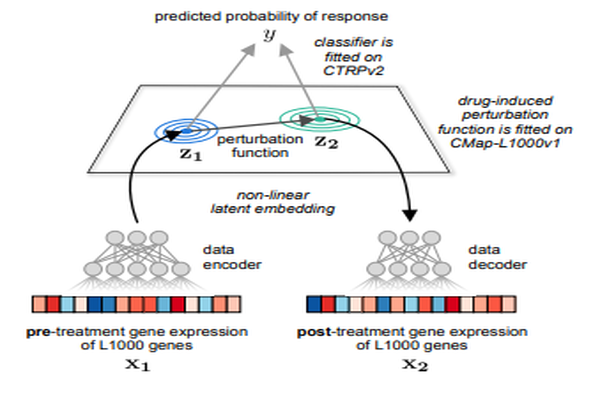

Individualized drug response prediction is a fundamental part of personalized medicine for cancer. Great effort has been made to discover biomarkers or to develop machine learning methods for accurate drug response prediction in cancers. Incorporating prior knowledge of biological systems into these methods is a promising avenue to improve prediction performance. High-throughput cell line assays of drug-induced transcriptomic perturbation effects are a prior knowledge that has not been fully incorporated into a drug response prediction model yet.
We introduce a unified probabilistic approach, Drug Response Variational Autoencoder (Dr.VAE), that simultaneously models both drug response in terms of viability and transcriptomic perturbations. Dr.VAE is a deep generative model based on variational autoencoders. Our experimental results showed
Dr.VAE to do as well or outperform standard classification methods for 23 out of 26 tested FDA drugs. In a series of ablation experiments we showed that the observed improvement of Dr.VAE can be credited to the incorporation of drug-induced perturbation effects with joint modeling of treatment sensitivity.
link to paper